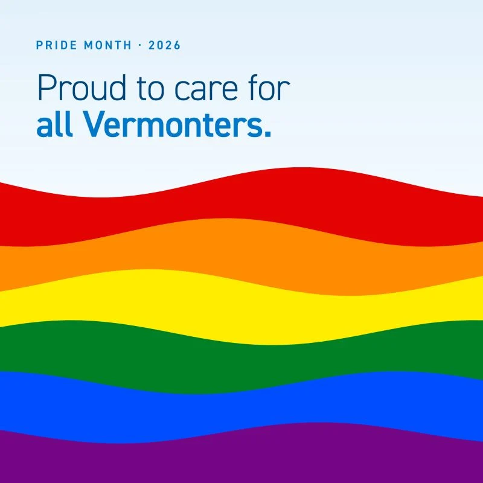
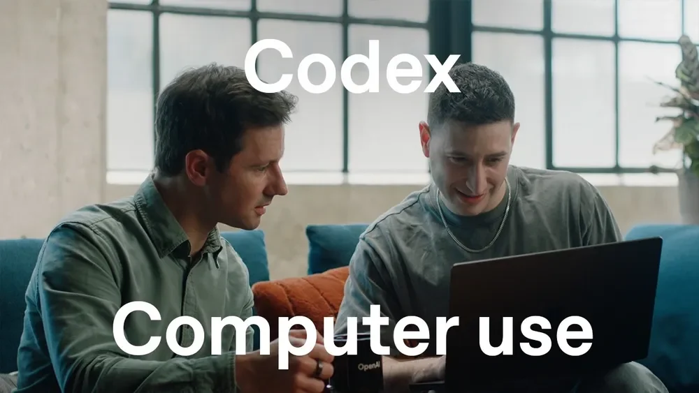
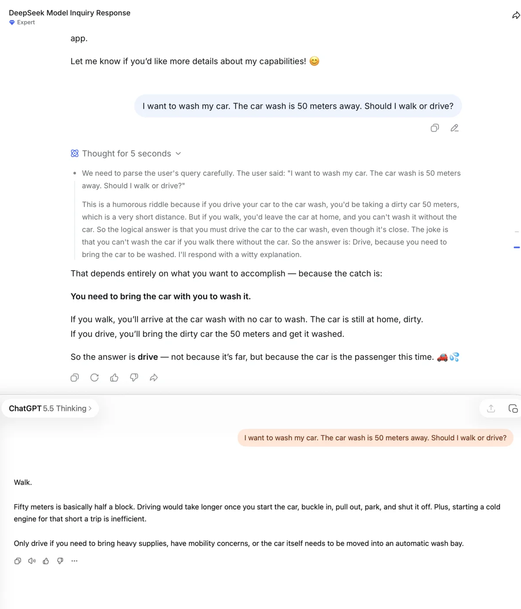
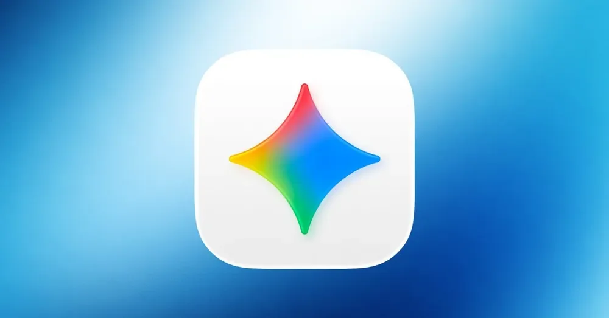
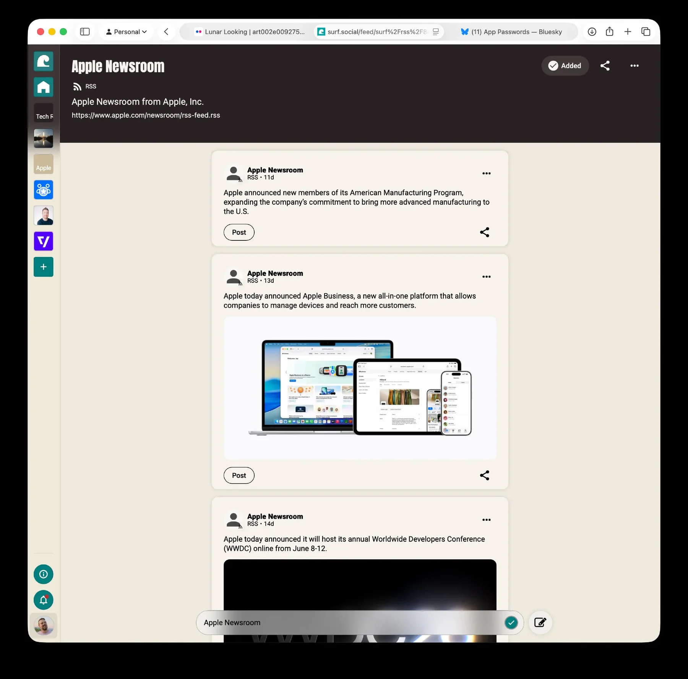
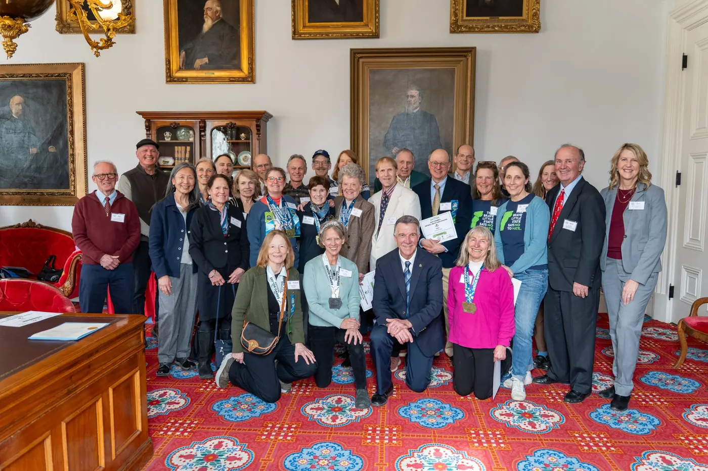
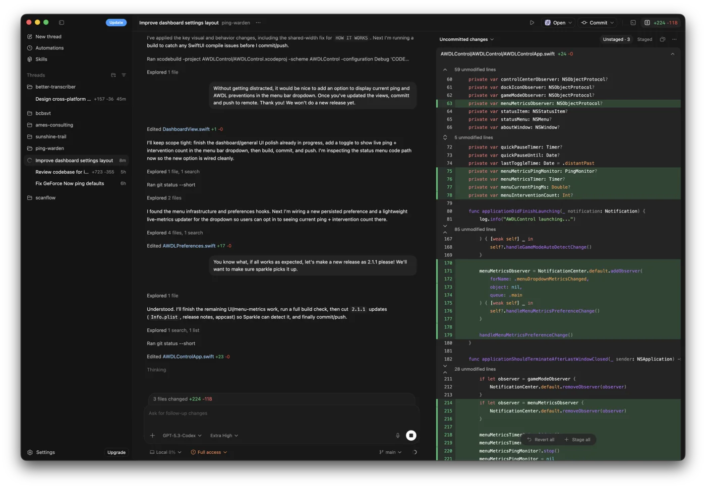
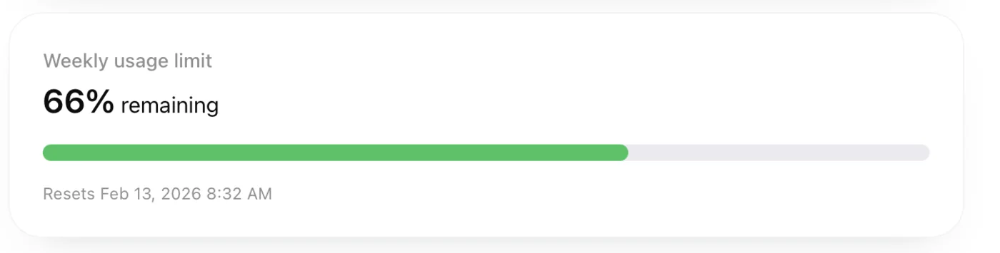
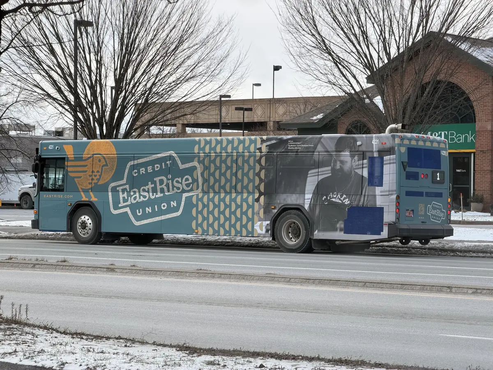
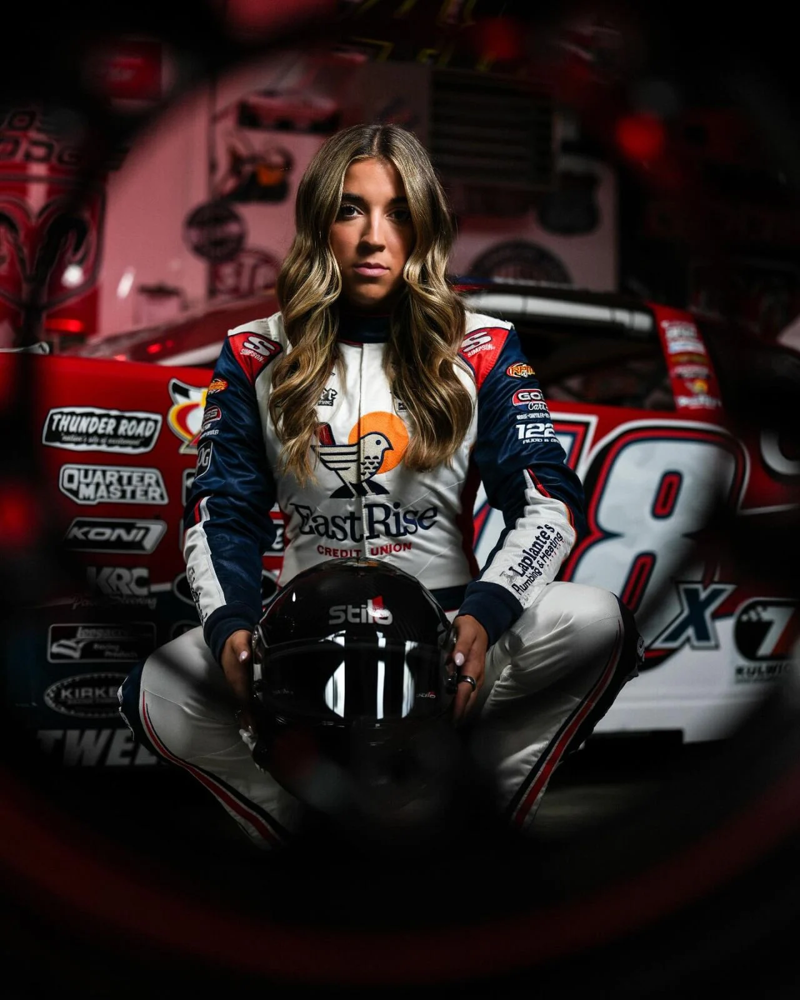

I spend a lot of my free time thinking about how the brands I love in Vermont could push their digital experiences further. I can’t help it! I see a brand doing something great and I immediately start thinking about what else they could build.
I’ll give you an example.
Lawson’s Finest Liquids is one of Vermont’s most beloved craft breweries, and they’re in the middle of expanding into new markets along the East Coast. Their brand is incredible, their community impact is real, and their commitment to freshness is central to everything they do. But that story is mostly told through a traditional website. I kept thinking: what if you could experience that expansion as a journey?
So I built The Sunshine Trail, an interactive map that connects Lawson’s home in Waitsfield, Vermont to Asheville, North Carolina. 791 miles of mountain communities, outdoor adventures, and cold beer.
The map shows every Lawson’s location I could identify (breweries, retailers, bars, restaurants) alongside hiking trails, river put-ins, community partners, and DC fast chargers along a scenic road trip route through the Blue Ridge Parkway, Skyline Drive, and Vermont Route 100. Every design element pulls directly from Lawson’s brand: their colors, their fonts, their custom SVGs, even the signature wave animation from their website. It should feel like something Lawson’s built themselves.
But the details are where it gets fun. Hover over “Sunshine” in the header and god rays shoot across the page. On HDR displays, the sun pushes brightness beyond standard range. Hover over “Cold Beer” and it starts snowing, a nod to their chain of freshness promise. The Sip of Sunshine logo spins with real momentum physics, and clicking it launches emoji bursts. None of these get in the way if you’re just there for the map. That’s the whole point of them being Easter eggs.
The live impact widget projects real historical data forward, showing dollars raised and solar energy generated ticking up in real time. Community partner popups tell actual impact stories with donate buttons linking directly to each organization. An email capture modal triggers after 30 seconds on the route view, creating a natural top-of-funnel opportunity with genuine value exchange: a curated road trip itinerary.
I built the whole thing with Claude as a coding partner, tested it across 15 screen sizes, and added full accessibility support throughout. On mobile, tilting your phone creates wind that blows the snowflakes. The map expands when you tap a marker so you have room to actually read the popup. Every interaction is designed to teach you how to use the site without having to explain anything.
If you want to explore it, the site is live at thesunshinetrail.com. It's password protected, so use "linkedin" to get in. Let me know what you think in the comments! 👇
#DigitalMarketing #CraftBeer #Vermont #AI #WebDevelopment #BrandStrategy
Social
Original public posts
I’m so happy for them 😭😭😭
Crazy stuff. This is the fire, I think, creating the smoke haze in Vermont today.
Slava Ukraini! 🇺🇦
The team that made this video truly cooked. Marketing at its finest!

I've sat in enough marketing meetings to know how easily a post like this gets hedged into nothing, and this one didn't. That says a lot about the people I work with and the organization behind it. Proud of both. 💙
Happy #PrideMonth, #Vermont! 🌈
Pride Month is a good time to say something plainly: LGBTQ+ Vermonters deserve care that respects who they are, because feeling safe and seen is part of being healthy.
At Blue Cross and Blue Shield of Vermont, whole person care means supporting both body and mind, so our member benefits include access to mental health counseling. In addition, we offer personalized, voluntary, no-cost support to navigate gender affirming services from our expert team of nurses and social workers.
We’re proud to support organizations like Outright Vermont, the Pride Center of Vermont, and the Barre People's Health & Wellness Clinic, which partners with the Rainbow Bridge Community Center to help community members access youth and family support, crisis resources, and free affirming care information.
Start with mental health support resources: https://lnkd.in/eXKRjT-h
Three posts in one day? That can't be good for my reach! I just can't help it but to share the lovely faces of my new friends and colleagues at Blue Cross and Blue Shield of Vermont. 💙
Special shoutout to my buddies from EastRise Credit Union! I'm glad I got the opportunity to say "howdy" and take your picture. 🧡
Before I stepped into my new role at Blue Cross and Blue Shield of Vermont, I had the chance to do something I'd honestly dreamed about for years: work with the team at BETA TECHNOLOGIES.
It started as a contract to produce a series of workforce development videos for BETA’s manufacturing team, but from the first day of research through the final edit, it became something I’ll carry with me for a long time.
I got to sit across from people who found their way to BETA through discovery flights, trade school programs, recoveries from serious accidents, and doors that probably weren’t supposed to open this far.
They’re building real careers in #Vermont manufacturing across quality, composites, assembly, and motors. Many of them wouldn’t be here (in some cases, wouldn’t even be in Vermont) if BETA wasn’t here too.
Sarah Deshaw, BETA's Workforce Development Lead, put it better than I could: "When we invest in people here, we're investing in Vermont."
Jerry Ricciotti, Andrew Rowley, Colby Mesick — thank you for bringing me in. It meant more than you know. I hope we have a chance to work together again in the future!
#Vermont #ElectricAviation #VideoProduction #BETATechnologies #WorkforceDevelopment
Emma joined BETA through our partnership with the Community College of Vermont's Career Pathway Entry Program, building new skills and finding a pathway into electric aerospace.
There’s more than one way to get here. From first jobs to career changes, we’re hiring.
Come build electric airplanes with us at careers.beta.team
Will was such a joy to work with on this shoot for EastRise Credit Union!
This might be the first OpenAI video I’ve watched that hasn’t made me want to pull my hair out. https://www.youtube.com/watch?v=D_FCYsshMI4

This might be the first OpenAI video I've watched that hasn't made me want to pull my hair out.
Another #GreenUpDay in the books! Loved getting out in the sunshine with the crew from Blue Cross and Blue Shield of Vermont and helping keep Vermont #Green. 💚💙

DeepSeek v4 vs GPT 5.5
Proud to work for Blue Cross and Blue Shield of Vermont! The work that Vermont Businesses for Social Responsibility (VBSR) members do is critical to the future of our state.
Thanks for hosting BETA TECHNOLOGIES! I knew our paths would cross again soon. 🛫 #Vermont
Tuesday's Vermont Businesses for Social Responsibility (VBSR) Get-Together at BETA TECHNOLOGIES brought together Vermont employers who've committed to running their businesses in a way that's accountable to workers, community, and environment. Good conversations, and a lot to take back to the work ahead!
📸 BETA TECHNOLOGIES/Brian Jenkins
This!
https://mstdn.social/@stux/116414129912923876
This!
mstdn.social/@stux/1164141299...
I might actually use Gemini now. 😂
https://mastodon.social/@oliverames/116410037958753066
I might actually use Gemini now. 😂
mastodon.social/@oliverames/1...
Native Swift! You really can tell. Begging Claude and Codex teams to do the same. https://9to5mac.com/2026/04/15/google-launches-gemini-mac-app-heres-what-it-offers/

Native Swift! You really can tell. Begging Claude and Codex teams to do the same.
This gives me chills. 🌝
That’s one good looking spaceship!
See folks? This is why da Vinci was a scientist AND an artist!

@mmccue.bsky.social Hi there! I'm wondering, is Surf pulling icons from the RSS feed? It doesn't seem like it.
Faster internet than the majority of #Vermont
https://mastodon.social/@jamesthomson/116347643258004274
Faster internet than the majority of #Vermont
mastodon.social/@jamesthomson...
He’s gonna drop a nuke while simultaneously being unable to spell “rain.”
https://bsky.app/profile/did:plc:jop73mu5bv5gs4emcfffeoz4/post/3miosunexuk2l
He's gonna drop a nuke while simultaneously being unable to spell "rain."
Super cool project. I’m kinda surprised NASA hasn’t built something like it!
https://universeodon.com/@jakobrosin/116345900231522800
Super cool project. I'm kinda surprised NASA hasn't built something like it!
universeodon.com/@jakobrosin/...
Great day to be a fan of the open web. I hope this takes off! 🚀 https://about.surf.social/surf-launches-surf-social-websites/
Folks REALLY do not understand how monumental this injection burn is. Though unlikely, failure in LEO feels somehow less scary. There’s no coming back now! The bravery of these astronauts is awesome and inspiring. 🇺🇸🇨🇦👩🏼🚀👨🏼🚀👨🏿🚀🧑🏻🚀
Not a bad view from the new office! #Vermont

Incredible first week at Blue Cross and Blue Shield of Vermont! What a way to cap it off, seeing many new and old faces in the State House. I'm pretty sure there was someone there from nearly stage of my life so far. Did I mention the athletes? Wow! What an inspiration. 💪
We’re proud to be the presenting sponsor of this year's Vermont Senior Games (National Senior Games Association)! 🏅
Yesterday at the State House, our President and CEO Beth Roberts joined Governor Phil Scott to celebrate the athletes who competed in the national games. At 50 and up, these Vermonters are proof of what is possible when you prioritize your health.
Exercise can be the best medicine, and we’re honored to support an organization that shares our goal of a healthy #Vermont. vermontseniorgames.org
#HealthyAging #VermontSeniorGames #SeniorGames
I'm excited to share that I've joined Blue Cross and Blue Shield of Vermont! I'll be supporting the organization and the brand team as their Social Media Strategist.
After nearly seven years building what became one of Vermont's most engaging social media presences at EastRise Credit Union, I'm bringing that same energy to an organization whose mission hits close to home: helping Vermonters access quality, affordable healthcare.
Vermont is a small state with big challenges and healthcare is at the center of so many of them. I'm excited to tell stories that matter, build community, and help people understand the resources available to them. That's always been what I love most about this work: using digital platforms to connect real people with things that actually improve their lives.
Beth Wirsul, you were my dance partner through this entire process, from the very first phone call to the day I signed. Your professionalism, warmth, and transparency set the tone for everything that followed. I knew I'd be joining a team that values doing the work well and treating people right.
To everyone who supported me during the search, the advisors, the references, the friends who listened, the people who made introductions and sent encouragement when I needed it most, THANK YOU! The past few months taught me a lot about patience, persistence, and the value of genuine relationships.
Here's to the next chapter! Let's go, Vermont. 💪
#BlueCrossVT #SocialMediaStrategy #Vermont
@krzyzanowskim you also need another app icon from @matthewskiles 😉
@krzyzanowskim installed commander! So glad you are making this. The app keeps hanging on large directories though. Any fixes in the pipeline?
“not all of the features are working reliably and there are problems with accuracy.” Have they used the version of Siri that has been shipping for the past decade?!
https://www.macrumors.com/2026/02/11/siri-features-delayed-ios-26-4/
I spend a lot of my free time thinking about how the brands I love in Vermont could push their digital experiences further. I can’t help it! I see a brand doing something great and I immediately start thinking about what else they could build.
I’ll give you an example.
Lawson’s Finest Liquids is one of Vermont’s most beloved craft breweries, and they’re in the middle of expanding into new markets along the East Coast. Their brand is incredible, their community impact is real, and their commitment to freshness is central to everything they do. But that story is mostly told through a traditional website. I kept thinking: what if you could experience that expansion as a journey?
So I built The Sunshine Trail, an interactive map that connects Lawson’s home in Waitsfield, Vermont to Asheville, North Carolina. 791 miles of mountain communities, outdoor adventures, and cold beer.
The map shows every Lawson’s location I could identify (breweries, retailers, bars, restaurants) alongside hiking trails, river put-ins, community partners, and DC fast chargers along a scenic road trip route through the Blue Ridge Parkway, Skyline Drive, and Vermont Route 100. Every design element pulls directly from Lawson’s brand: their colors, their fonts, their custom SVGs, even the signature wave animation from their website. It should feel like something Lawson’s built themselves.
But the details are where it gets fun. Hover over “Sunshine” in the header and god rays shoot across the page. On HDR displays, the sun pushes brightness beyond standard range. Hover over “Cold Beer” and it starts snowing, a nod to their chain of freshness promise. The Sip of Sunshine logo spins with real momentum physics, and clicking it launches emoji bursts. None of these get in the way if you’re just there for the map. That’s the whole point of them being Easter eggs.
The live impact widget projects real historical data forward, showing dollars raised and solar energy generated ticking up in real time. Community partner popups tell actual impact stories with donate buttons linking directly to each organization. An email capture modal triggers after 30 seconds on the route view, creating a natural top-of-funnel opportunity with genuine value exchange: a curated road trip itinerary.
I built the whole thing with Claude as a coding partner, tested it across 15 screen sizes, and added full accessibility support throughout. On mobile, tilting your phone creates wind that blows the snowflakes. The map expands when you tap a marker so you have room to actually read the popup. Every interaction is designed to teach you how to use the site without having to explain anything.
If you want to explore it, the site is live at thesunshinetrail.com. It's password protected, so use "linkedin" to get in. Let me know what you think in the comments! 👇
#DigitalMarketing #CraftBeer #Vermont #AI #WebDevelopment #BrandStrategy

Yeah, the Codex app is AWESOME. Time to step it up Anthropic! Cowork isn't going to cut it.

Sure, it's not as expensive as Opus 4.5, but it's not like I'm unable to hit my weekly usage limit in a single afternoon!
After a busy few months, I'm thrilled to share some news: I'm officially a member of the Montpelier Rotary Club.
Rotary has been part of my story since I was sixteen. Charles Hogan and the Cambridge Rotary Club took a chance on me and sent me to Belgium for a year through their Youth Exchange program. That experience was unforgettable!
Now, what feels like a short time later, I'm excited to be officially joining. Local community organizations like Rotary are exactly what we need right now. Real people, doing real work, in real places.
Thank you to Marc Gwinn and Mark Provost for sponsoring me. And to Charles Hogan and everyone at Cambridge Rotary who believed in a teenager with big ideas way back when.
Looking forward to doing some good work with this crew.
If you're still following me from those days, say hi in the comments! I have so many wonderful memories of Rotary, of Belgium, of host families and late-night conversations and figuring out who I was going to be. Would love to reconnect.
#Rotary #Vermont #Community #YouthExchange

It's not every day you see a photo you took on a bus! 🚌
I was the professional photographer for EastRise Credit Union during my time there, doing imagery for everything from brand development all the way through our campaigns in late 2025 and 2026. I'm mostly a digital content guy, but there's truly nothing more special than seeing your work out in the world — on a bus, no less!
As a kid, I thought pictures on NYC buses were the highest form of advertising. Only the most prestigious brands could afford to advertise there. 🤭 That's still kind of how I feel? Seeing this in the wild, unexpectedly, was a moment.
I started as a passionate hobbyist. EastRise helped me grow into a professional. They really do nurture their own, and I'm forever grateful for that.
If you ever need photography for your business, I'm around! I'd love to chat.
RE: https://mastodon.social/@BasicAppleGuy/115888906340881425
I'm excited for this, but I've got to say, I did think the icons were a joke at first.
@jordibruin Hi there! I was on the 4.0 TestFlight beta for the iOS version of MacWhisper but I haven’t seen any movement. Is it still in the works?
This was an incredible project to be involved in. There are limited opportunities to launch a new brand, and it was an honor to get to play a small part in this one! Kudos to the whole team at Adrenaline and EastRise Credit Union. 🙌
Brand and culture must work together to shape a cohesive organization from the inside out. See how these two merging credit union brands built upon a bold new brand identity, successfully integrating two cultures into a singular institution with a strong brand purpose. https://hubs.ly/Q03VgMYg0

Working with Taylor Hoar was a highlight of my time at EastRise Credit Union.
Taylor made history in 2025 as the first Vermonter ever selected for the prestigious Kulwicki Driver Development Program, becoming the first female finalist since 2022. At Thunder Road, she earned a podium finish in the Squier Cup and continues to prove herself in one of short track racing's most competitive environments.
But here's what I'll remember most:
It wasn't just her performance on the track—it was how she showed up everywhere else. Four years with Race to Read. Volunteering at the Vermont Foodbank. Bringing hope to kids at CAMP TA-KUM-TA.
Taylor embodied something I see in Vermont's best: the drive to excel in your craft while lifting up the community around you.
I'll see you on the high banks, Taylor! Keep showing #Vermont what hard work and heart can accomplish.
One of my favorite shots from 2025 📸 https://lnkd.in/etur9Gy8
After nearly seven years at EastRise Credit Union, I'm exploring what's next.
It's been a significant chapter. I arrived when we were VSECU, helped build Vermont's most engaging credit union social media presence, and navigated a complete organizational merger and rebrand. I'm proud of what we built—from a viral cow that raised funds for members during COVID, to content that consistently outperformed organizations many times our size, to establishing EastRise's digital voice.
Thanks to my wonderful colleagues—from facilities and branch teams to my compatriots in marketing. Y'all do great work, and I'm looking forward to seeing what you do next. I'm particularly thankful to Jevonne for her guidance and leadership.
To the members I got the pleasure of working with, you're incredible.
When I graduated high school right here in Morrisville, Vermont, I thought I'd be looking outside the state for a meaningful career. I'm so happy that I chose to build that right here, along with my beautiful family.
The work mattered because it helped Vermonters understand that financial empowerment isn't intimidating—it's accessible. That's always been the thread through my career: making complex things clear, whether it's astronomy, independent journalism, or why your local credit union actually gives a damn about your financial future.
I'm really excited for this next chapter. I'm looking for what's next—ideally with mission-driven organizations that prioritize authentic community connection. I thrive in innovative, data-driven environments, and where someone can be equally comfortable in a strategy meeting or behind the camera.
That intersection—where data meets storytelling—is where I thrive. I’m looking forward to finding the next place to do exactly that.
As a sixth-generation Vermonter, I had an incredible experience at BETA TECHNOLOGIES' Career Day yesterday. I couldn't be prouder to see our state leading the charge in electric aviation.
What struck me most was how BETA embodies Vermont values while tackling global challenges. This isn't just about electric aircraft; it's about proving that transformative technology can emerge from a state that's always balanced innovation with purpose.
Walking through the South Burlington facility, the scale, innovation, and genuine passion of the team were truly inspiring. This is Vermont manufacturing at its finest – sustainable, innovative, and built by people who genuinely care about the mission. Great to see this opportunity for graduates from University of Vermont and Vermont State University!
Thank you to everyone at BETA who took the time to share their perspectives. I'm incredibly excited about the future of sustainable aviation in Vermont, supported by a great tech ecosystem with partners like Vermont Manufacturing Extension Center (VMEC) and the Vermont Department of Labor.
✈️⚡ #ElectricAviation #VermontInnovation #SustainableTransportation #BETATechnologies #Vermont #VT #VTtech #MadeinVermont #VermontBusiness #Industry40
Can’t think of anyone who deserves this more than Ibby. He’s been supporting us on social and the results have been stellar. Can’t believe he takes on so much! Way to go Ibby Wilson. 💚
Whatever you think of AI, Federico Viticci is doing some great blogging over at MacStories. I particularly love the ways he's discovered to integrate Claude and Google Gemini. Truly using the two best tools out there.
"I’d also point out another advantage for implementing Gemini in Private Cloud Compute: it’s natively multimodal, and it’s very good at dealing with image recognition, OCR, and audio transcription (which I started using months ago, and I recently implemented as a skill in Claude). The vision capabilities of Gemini could probably come in handy for the on-screen awareness features that Siri was supposed to receive before Apple delayed them."
https://lnkd.in/eHBdBb7n
I'm excited to moderate "Community at the Core" at Hula with Habitat for Humanity Executive Director Rebekah Stephens and Eric Axelrod (Wood4Good). We'll be chatting about how to build partnerships that work with communities, not just in them, and what that distinction actually means in practice.
Burlington Young Professionals, if you're building something in #Vermont and wondering how to avoid the "parachute nonprofit" trap or the generic corporate community playbook, this session is for you.
See you there.
🪵 Wood4Good, LTD. Warming Homes and Hearts
Great social video needs two things most organizations struggle with: creators brave enough to be authentic on camera, and leaders willing to approve content that doesn't look "corporate perfect."
That discomfort is the signal you're doing it right.
When I hear teams worry about creating video content because they are afraid it requires special skills like editing, I tell them, "Yes, it does." All the other things your team does require skills, why would this be different?
Doesn't mean you can't learn them. But of course good creative work takes skills...
Our October social media performance just peaked. One post. One event sponsorship. Our most shared post of the year. (Keep reading for the link!)
EastRise Credit Union sponsored Wheels for Warmth—a tire donation drive supporting heating assistance for Vermonters heading into winter. But here's what made the difference:
We didn't post "proud sponsor" graphics. We made a practical guide. "Here's exactly what you need to know before Saturday's tire sale." 🛞
The result? More shares than we've seen on any post this year. Most of the people who engaged weren't even following us yet. They found it worth passing along.
🔗 https://lnkd.in/eAjuZYbJ
Here's what we learned: People don't engage with institutions. They engage with their neighbors.
Instead of corporate speak about "community commitment," we leaned into Vermont culture—the real stuff. Halloween content with local humor. Employee spotlights featuring actual team members like Macey in our branches. Instagram Stories that performed because they felt like they came from a friend, not a financial brand.
The ROI? Our Thunder Road racing partnership with Taylor Hoar didn't just put our logo on a car—it brought her racing audience directly to our channels. That's athlete amplification working as it should.
But the real metric: heating assistance for Vermonters heading into winter.
The social media lesson?
"Vermont life meets internet culture" works because it's specific. Generic "community-focused" content dies in the feed. Content that shows you actually understand the place you're in—that gets shared.
Financial institutions have an authenticity problem. The fix isn't better branding. It's actually being part of your community and proving it through every post.
What's your take—are you seeing authentic local content outperform corporate messaging in your feeds? Let me know in the comments. 👇
#SocialMediaStrategy #CommunityBanking #VermontBusiness #ContentStrategy #CreditUnion Filene Research Institute Global Alliance for Banking on Values #Vermont #DigitalContent